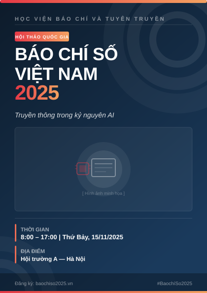
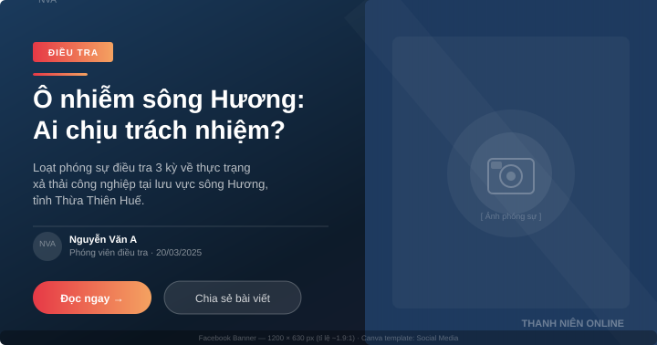
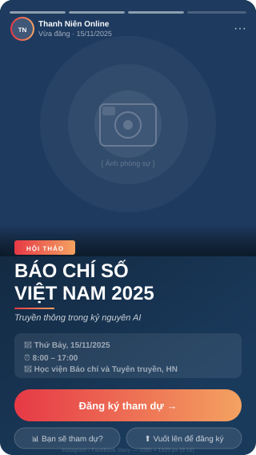

Thiết kế Poster & Banner với Canva
Sau chương này, sinh viên có thể:
- Hiểu và áp dụng các nguyên tắc thiết kế thị giác cơ bản trong bối cảnh báo chí
- Tạo poster sự kiện và banner mạng xã hội chuyên nghiệp bằng Canva
- Duy trì tính nhất quán thương hiệu (brand consistency) trên nhiều ấn phẩm thiết kế
- Xuất file thiết kế đúng định dạng và kích thước cho từng nền tảng phát hành
- Đánh giá một thiết kế đồ họa báo chí dựa trên các tiêu chí có cơ sở
3.1 Thiết kế đồ họa trong báo chí hiện đại
Trong nhiều thập kỷ, thiết kế đồ họa là lãnh địa riêng của bộ phận kỹ thuật và nghệ thuật trong tòa soạn. Phóng viên viết bài, biên tập viên duyệt nội dung, còn graphic designer lo phần hình ảnh. Ranh giới đó ngày nay đã mờ dần — và với nhiều tòa soạn quy mô nhỏ, ranh giới đó gần như không còn tồn tại.
Khi VnExpress ra mắt chuyên mục infographic, khi Tuổi Trẻ đăng tải các bài viết với banner thiết kế bắt mắt trên Facebook, hay khi một phóng viên tự do đăng poster quảng bá sự kiện tọa đàm lên Instagram — tất cả đều đòi hỏi kỹ năng thiết kế ở mức độ nhất định từ người làm báo. Bạn không cần trở thành designer chuyên nghiệp, nhưng bạn cần đủ kiến thức để tạo ra những ấn phẩm truyền thông đáng tin cậy và thống nhất về mặt thị giác.
Thiết kế không chỉ là làm đẹp. Trong báo chí, thiết kế là một hình thức truyền thông. Một poster được thiết kế tốt truyền đạt thông tin nhanh hơn, đúng đối tượng hơn và tạo được lòng tin với độc giả. Ngược lại, một banner cẩu thả — font chữ không khớp, màu sắc loạn, thông tin thiếu hệ thống — có thể làm tổn hại đến uy tín của cả một tòa soạn.
Khảo sát của Hội Nhà báo Việt Nam năm 2022 cho thấy hơn 70% tòa soạn báo điện tử có quy mô dưới 20 người. Trong bối cảnh đó, phóng viên thường phải đảm nhiệm nhiều vai trò: viết bài, chụp ảnh, dựng video — và ngày càng nhiều là tự thiết kế đồ họa truyền thông cho bài viết của mình.
Thiết kế phục vụ thông tin, không phải che lấp thông tin
Nguyên tắc cốt lõi cần ghi nhớ: thiết kế tốt là thiết kế vô hình. Nghĩa là người đọc tiếp nhận thông tin một cách tự nhiên, không bị phân tâm bởi các yếu tố thị giác. Một poster sự kiện hoàn hảo là poster mà người xem ngay lập tức biết: sự kiện gì, ở đâu, khi nào — trước khi họ kịp nhận ra mình đang "đọc" thiết kế.
Canva — công cụ chúng ta sử dụng trong chương này — ra đời năm 2013 với triết lý "dân chủ hóa thiết kế": đưa khả năng tạo ra những sản phẩm đồ họa chất lượng đến tay những người không có nền tảng thiết kế chuyên sâu. Đến năm 2024, Canva có hơn 170 triệu người dùng tại 190 quốc gia, trong đó có hàng triệu nhà báo, nhà giáo dục và người làm truyền thông phi lợi nhuận.
3.2 Nguyên tắc thiết kế cơ bản
Trước khi mở Canva, hãy nắm vững bốn nguyên tắc nền tảng của thiết kế đồ họa. Bộ nguyên tắc này được đúc kết bởi nhà thiết kế Robin Williams trong cuốn The Non-Designer's Design Book (1994) và vẫn giữ nguyên giá trị đến ngày nay. Tên viết tắt là C.R.A.P — nghe có vẻ kỳ lạ, nhưng đây là công cụ phân tích thiết kế mạnh mẽ nhất bạn sẽ học được.
Tương phản (Contrast)
Tương phản là sự khác biệt có chủ ý giữa các yếu tố trong thiết kế: màu sáng trên nền tối, chữ lớn bên cạnh chữ nhỏ, hình ảnh chi tiết đặt cạnh vùng không gian trắng. Tương phản giúp tạo ra điểm nhìn — hướng mắt người xem đến thông tin quan trọng nhất trước tiên.
Trong poster báo chí, tiêu đề sự kiện thường cần độ tương phản cao nhất. Ví dụ: chữ trắng kích thước lớn trên nền ảnh tối, hoặc chữ đen đậm trên dải màu vàng sáng. Tránh đặt chữ xám trên nền xám nhạt — dù trông "tinh tế" nhưng thực ra làm giảm khả năng đọc, đặc biệt trên màn hình điện thoại.
Đặt chữ màu trắng trực tiếp lên ảnh mà không có lớp overlay (lớp phủ màu bán trong suốt). Khi phần sáng của ảnh xuất hiện sau chữ trắng, chữ trở nên gần như vô hình. Luôn thêm một lớp overlay màu tối với độ mờ 40–60% phía sau chữ khi dùng ảnh nền.
Lặp lại (Repetition)
Lặp lại có nghĩa là các yếu tố thị giác — màu sắc, font chữ, kích thước, hình dạng — được sử dụng nhất quán xuyên suốt thiết kế. Lặp lại tạo ra cảm giác thống nhất và chuyên nghiệp, đồng thời giúp độc giả nhận ra thương hiệu ngay lập tức.
Với các tòa soạn báo chí, lặp lại chính là nền tảng của nhận diện thương hiệu (brand identity). Màu xanh đặc trưng của VnExpress (#0b69b8), font chữ nhất quán của Báo Nhân Dân, bố cục chuẩn của header Thanh Niên — tất cả đều là kết quả của nguyên tắc lặp lại được áp dụng có hệ thống.
Căn chỉnh (Alignment)
Mỗi yếu tố trong thiết kế cần được đặt một cách có chủ ý — không có gì được đặt "tùy tiện" hay "nhìn có vẻ ổn". Căn chỉnh tạo ra các đường dẫn thị giác vô hình giúp mắt người xem di chuyển trơn tru qua thiết kế. Trong Canva, các đường kẻ hướng dẫn (alignment guides) hiển thị tự động khi bạn kéo thả phần tử — hãy tận dụng chúng triệt để.
Căn trái (left alignment) tạo cảm giác chính thống và dễ đọc — phù hợp với các poster mang tính thông tin cao. Căn giữa (center alignment) tạo cảm giác trang trọng — thường thấy trong thiệp mời, poster hội thảo chuyên nghiệp. Tránh trộn lẫn nhiều kiểu căn chỉnh trên cùng một thiết kế vì sẽ tạo ra cảm giác lộn xộn.
Kề gần (Proximity)
Các yếu tố liên quan đến nhau về mặt nội dung cần được đặt gần nhau về mặt không gian. Ngược lại, các yếu tố không liên quan cần được tách biệt bằng khoảng trắng. Nguyên tắc này phản ánh cách não người xử lý thông tin: chúng ta tự động nhóm các thứ gần nhau lại với nhau.
Ví dụ thực tế: trong một poster hội thảo, tên diễn giả và chức danh của họ nên được đặt sát nhau, trong khi thông tin địa điểm và thời gian nên được nhóm riêng. Nếu tất cả thông tin trải đều khắp poster với khoảng cách bằng nhau, người xem phải nỗ lực hơn để hiểu cái gì thuộc về cái gì.
Lần tới khi bạn lướt Facebook, hãy dừng lại ở 3 poster sự kiện bất kỳ và phân tích: thiết kế nào sử dụng tốt nguyên tắc nào? Thiết kế nào vi phạm nguyên tắc nào? Sau một tuần luyện tập này, mắt thẩm mỹ của bạn sẽ thay đổi đáng kể.
Typography: Nghệ thuật chọn và dùng chữ
Typography — khoa học và nghệ thuật sắp xếp chữ viết — là yếu tố quyết định hơn 70% ấn tượng thị giác của một thiết kế. Trong báo chí, sự lựa chọn font chữ không chỉ là thẩm mỹ mà còn là thông điệp về giá trị và phong cách của tòa soạn.
Serif là các font có "chân" ở đuôi nét chữ (Times New Roman, Georgia, Lora). Chúng gợi cảm giác truyền thống, uy tín và học thuật — phù hợp với báo in và các tạp chí dài hơi. Sans-serif là font không có chân (Arial, Roboto, Be Vietnam Pro). Chúng gợi cảm giác hiện đại, sạch sẽ và dễ đọc trên màn hình — phù hợp với báo điện tử và truyền thông số.
Trong một thiết kế, nên giới hạn tối đa hai họ font: một font cho tiêu đề (thường là serif hoặc font display có cá tính), một font cho nội dung phụ (thường là sans-serif dễ đọc). Dùng nhiều hơn hai font sẽ tạo ra cảm giác thiếu chuyên nghiệp.
Khoảng cách dòng (line height) nên từ 1.4–1.6 lần cỡ chữ cho văn bản đoạn, và 1.1–1.2 cho tiêu đề lớn. Khoảng cách chữ (letter spacing) có thể được tăng nhẹ 5–10% cho các nhãn viết hoa (uppercase labels) để tăng độ dễ đọc.
Màu sắc: Lý thuyết và ứng dụng thực tế
Màu sắc giao tiếp trực tiếp với cảm xúc và nhận thức của người xem, thường trước cả khi họ đọc một từ nào trong thiết kế. Hiểu cơ bản về lý thuyết màu sắc giúp bạn đưa ra những lựa chọn có chủ đích thay vì chọn màu theo cảm tính.
Màu chính (Primary color) là màu chủ đạo, thường là màu nhận diện thương hiệu — ví dụ màu đỏ của Báo Quân đội Nhân dân hay màu xanh lam của VnExpress. Màu phụ (Secondary color) hỗ trợ màu chính, thường là màu tương phản hoặc màu trung tính. Màu nhấn (Accent color) dùng tiết kiệm để kéo sự chú ý vào các yếu tố hành động hoặc thông tin quan trọng nhất.
Quy tắc 60–30–10 là công thức màu sắc đơn giản và hiệu quả: 60% diện tích thiết kế dùng màu chủ đạo (thường là màu trung tính như trắng, kem, xám nhạt), 30% dùng màu phụ (màu thương hiệu), 10% dùng màu nhấn. Bằng cách giữ màu nhấn ở mức tối thiểu, bạn đảm bảo nó thực sự nổi bật khi xuất hiện.
Trong bối cảnh báo chí Việt Nam, cần lưu ý đến ý nghĩa văn hóa của màu sắc. Màu đỏ gắn liền với niềm vui, may mắn và các sự kiện lớn. Màu trắng thường liên quan đến tang lễ và nên tránh làm màu chủ đạo cho poster sự kiện vui. Màu xanh lá cây thường gợi cảm giác tươi mát, sức khỏe, môi trường.
3.3 Giới thiệu Canva
Canva (canva.com) là nền tảng thiết kế đồ họa trực tuyến hoạt động hoàn toàn trên trình duyệt web — không cần cài đặt phần mềm, không cần card đồ họa mạnh. Giao diện kéo thả trực quan, thư viện template khổng lồ và tích hợp hàng triệu ảnh miễn phí khiến Canva trở thành lựa chọn lý tưởng cho nhà báo không có nền tảng thiết kế chuyên sâu.
Giao diện và workspace
Khi đăng nhập vào Canva, bạn sẽ thấy trang chủ (Home) với các thiết kế gần đây và gợi ý template. Thanh tìm kiếm ở trên cùng cho phép tìm kiếm theo loại tài liệu (poster, banner, presentation...) hoặc theo chủ đề (báo chí, hội thảo, sự kiện).
Khi mở một thiết kế, workspace chia thành ba khu vực chính: thanh công cụ bên trái chứa các tab Templates, Elements, Text, Brand, Media và Apps; vùng canvas ở giữa là nơi bạn trực tiếp làm việc; và thanh thuộc tính bên phải (hoặc trên cùng) hiển thị các tùy chọn định dạng cho phần tử đang được chọn.
Canva Free và Canva Pro: So sánh thực tế
| Tính năng | Canva Free | Canva Pro (~$15/tháng) |
|---|---|---|
| Số template | 250.000+ | 610.000+ |
| Ảnh và đồ họa miễn phí | 1 triệu+ | 100 triệu+ (bao gồm Getty Images) |
| Lưu trữ đám mây | 5 GB | 1 TB |
| Brand Kit (bộ màu + font thương hiệu) | 1 bộ | Không giới hạn |
| Xóa nền ảnh tự động | Không | Có (Background Remover) |
| Thay đổi kích thước thiết kế | Không (phải tạo lại) | Có (Magic Resize) |
| Xuất file PDF in ấn (CMYK) | RGB chỉ | PDF Print (CMYK) |
| Tính năng AI (Magic Write, AI Image) | Giới hạn | Đầy đủ |
Canva cung cấp tài khoản Canva for Education hoàn toàn miễn phí cho sinh viên và giáo viên — bao gồm hầu hết tính năng của Canva Pro. Hỏi giảng viên hoặc nhà trường của bạn về chương trình này. Ngoài ra, nhiều tòa soạn thực tập và báo sinh viên cũng đã có tài khoản Canva Pro tập thể.
Brand Kit — Công cụ nhất quán thương hiệu
Brand Kit là tính năng cho phép bạn lưu bộ màu sắc, font chữ và logo của tòa soạn hoặc dự án vào Canva. Sau đó, với một cú nhấp chuột, bạn có thể áp dụng toàn bộ bộ nhận diện thương hiệu đó lên bất kỳ template nào.
Đây là tính năng đặc biệt quan trọng cho các nhóm làm việc chung: khi mọi thành viên trong tòa soạn đều truy cập cùng một Brand Kit, mọi thiết kế sẽ tự động nhất quán về màu sắc và font — loại bỏ hoàn toàn nguy cơ ai đó dùng "màu xanh gần giống" hay "font na ná" làm loãng nhận diện thương hiệu.
3.4 Thực hành: Tạo Poster sự kiện
Bạn sẽ tạo poster cho sự kiện giả định: "Hội thảo Báo chí số Việt Nam 2025 — Truyền thông trong kỷ nguyên AI". Thời gian: 8:00–17:00 ngày 15/11/2025. Địa điểm: Hội trường A, Học viện Báo chí và Tuyên truyền. Kích thước poster: A3 đứng (297 × 420 mm).
Bước 1: Tạo thiết kế mới với kích thước tùy chỉnh
- Truy cập canva.com và đăng nhập vào tài khoản
- Nhấn nút Create a design (Tạo thiết kế) ở góc trên phải
- Chọn Custom size (Kích thước tùy chỉnh) ở cuối danh sách
- Nhập Width: 297 mm, Height: 420 mm, đơn vị chọn mm
- Nhấn Create new design để mở canvas trống
Bước 2: Chọn và tùy chỉnh template nền
- Ở thanh bên trái, chọn tab Templates
- Gõ từ khóa "conference poster" hoặc "event poster dark" vào ô tìm kiếm
- Lọc theo Free nếu bạn dùng tài khoản miễn phí
- Chọn một template có bố cục tối màu, nhiều không gian cho tiêu đề lớn — phù hợp với sự kiện hội thảo chuyên nghiệp
- Nhấn vào template để áp dụng. Canva sẽ hỏi bạn có muốn giữ nguyên trang hiện tại không — chọn Replace (Thay thế)
Bước 3: Thay thế tiêu đề và thông tin
- Nhấn đúp vào khối tiêu đề lớn nhất — xóa text mẫu và gõ: HỘI THẢO BÁO CHÍ SỐ VIỆT NAM 2025
- Bên dưới, thêm dòng phụ đề: Truyền thông trong kỷ nguyên AI — dùng font italic nhỏ hơn (khoảng 60–70% cỡ tiêu đề chính)
- Tạo một khối text mới cho thông tin thời gian: 8:00 – 17:00 | Thứ Bảy, 15/11/2025
- Tạo khối text cho địa điểm: Hội trường A — Học viện Báo chí và Tuyên truyền, Hà Nội
- Thêm logo đơn vị tổ chức vào góc dưới: vào tab Uploads, tải logo lên và kéo vào vị trí
Người xem đọc poster theo thứ tự: tiêu đề sự kiện (lớn nhất) → thời gian và địa điểm (nổi bật thứ hai) → thông tin đăng ký/liên hệ (nhỏ hơn ở góc dưới). Hãy đảm bảo cỡ chữ phản ánh đúng thứ tự ưu tiên này. Tiêu đề nên lớn ít nhất gấp đôi thông tin chi tiết.
Bước 4: Điều chỉnh màu sắc và thị giác
- Chọn tất cả các phần tử màu chủ đạo và đổi sang màu của tòa soạn/đơn vị tổ chức (ví dụ:
#1a5276— xanh đậm học thuật) - Kiểm tra tương phản: đặt chữ sáng trên nền tối, hoặc ngược lại — không bao giờ chữ sáng trên nền sáng
- Nếu có ảnh nền, thêm overlay: vào Elements → Shapes → chọn hình chữ nhật, phủ toàn canvas, đặt màu đen, kéo thanh độ mờ (Transparency) xuống 50–60%
- Thêm đường kẻ trang trí (decorative line) để phân tách giữa tiêu đề và thông tin chi tiết: vào Elements → Lines
Bước 5: Rà soát cuối cùng
- Zoom ra 50% để nhìn toàn bộ poster — kiểm tra tổng thể trước khi kiểm tra chi tiết
- Đọc lại tất cả thông tin: chính tả, ngày tháng, địa điểm — lỗi trên poster in rất khó sửa
- Kiểm tra căn chỉnh: nhấn Ctrl+A để chọn tất cả, vào Arrange để kiểm tra các phần tử có thẳng hàng không
- Nhờ một người khác xem lại với mắt "tươi" — người không tham gia thiết kế thường phát hiện lỗi nhanh hơn

3.5 Thực hành: Tạo Banner mạng xã hội
Poster A3 là sản phẩm thiết kế cho in ấn và trưng bày. Nhưng trong kỷ nguyên truyền thông số, phần lớn thông tin quảng bá được phân phối qua mạng xã hội — và mỗi nền tảng có yêu cầu kích thước khác nhau. Một banner Facebook sẽ bị cắt hoặc mờ nếu bạn chỉ đơn giản là upload poster A3 lên.
Kích thước chuẩn các nền tảng mạng xã hội (2024–2025)
| Nền tảng | Loại nội dung | Kích thước (px) | Tỉ lệ | Ghi chú |
|---|---|---|---|---|
| Post ảnh vuông | 1080 × 1080 | 1:1 | Phổ biến nhất, hiển thị tốt trên cả desktop và mobile | |
| Post ảnh ngang | 1200 × 630 | 1.91:1 | Dùng khi chia sẻ link bài báo | |
| Story / Reel | 1080 × 1920 | 9:16 | Toàn màn hình dọc | |
| Post vuông | 1080 × 1080 | 1:1 | Định dạng truyền thống của Instagram | |
| Post dọc (Portrait) | 1080 × 1350 | 4:5 | Chiếm diện tích feed lớn hơn, được ưu tiên hiển thị | |
| Story | 1080 × 1920 | 9:16 | Giữ nội dung quan trọng trong vùng an toàn giữa màn hình | |
| Twitter / X | Post ảnh ngang | 1600 × 900 | 16:9 | Tỉ lệ màn hình rộng, phù hợp với ảnh chụp màn hình |
| YouTube | Thumbnail | 1280 × 720 | 16:9 | Tối thiểu 2MB, format JPG hoặc PNG |
| Zalo | Post ảnh | 1200 × 630 | 1.91:1 | Tương tự Facebook Open Graph |
Trên mọi nền tảng, hãy giữ toàn bộ nội dung quan trọng (tiêu đề, logo, thông tin liên hệ) trong vùng an toàn 10% — tức là không đặt nội dung quan trọng quá gần các cạnh của thiết kế. Các nền tảng đôi khi cắt xén hoặc che khuất vùng biên khi hiển thị trên các thiết bị khác nhau.
Bước 1: Tạo banner Facebook (1200 × 630 px)
- Nhấn Create a design → Custom size → nhập 1200 × 630 px
- Thay vì chọn template từ đầu, hãy thử tính năng Magic Resize nếu bạn dùng Canva Pro: mở poster từ bài 3.4, nhấn Resize ở thanh trên và chọn Facebook Post (Landscape)
- Nếu dùng Canva Free, tạo thiết kế mới và tái sử dụng các yếu tố từ poster: màu sắc, font chữ, logo, bố cục chung
Bước 2: Điều chỉnh bố cục cho định dạng ngang
- Chia banner thành hai vùng: bên trái (khoảng 60%) cho nội dung chính — tiêu đề và thông tin tóm tắt; bên phải (40%) cho ảnh minh họa hoặc đồ họa
- Tiêu đề trên banner nên ngắn gọn hơn poster: thay vì "Hội thảo Báo chí số Việt Nam 2025 — Truyền thông trong kỷ nguyên AI", dùng "Hội thảo Báo chí số 2025" cùng dòng phụ ngắn bên dưới
- Thêm dòng call-to-action rõ ràng: "Đăng ký miễn phí — Link trong phần bình luận" hoặc URL ngắn
- Đặt logo tòa soạn/đơn vị tổ chức ở góc dưới trái hoặc trên trái — vị trí người xem nhìn vào đầu tiên
Bước 3: Kiểm tra trên thiết bị di động
- Sau khi thiết kế xong, tải file xuống và mở trên điện thoại
- Kiểm tra: chữ có đủ lớn để đọc được không? (Cỡ chữ tối thiểu nên là 24–28px tương đương)
- Kiểm tra: nội dung có bị cắt xén hay bị che bởi giao diện của ứng dụng không?
- Nếu cần, quay lại Canva và điều chỉnh — thường là tăng cỡ chữ và giảm bớt chi tiết thừa

Tạo thêm phiên bản Story (1080 × 1920 px) cho cùng sự kiện đó. Story cho phép bạn thêm hiệu ứng động, sticker và tính năng tương tác (thăm dò ý kiến, đếm ngược). Sử dụng công cụ Animate trong Canva để thêm hiệu ứng xuất hiện cho tiêu đề — điều này làm tăng đáng kể tỉ lệ người xem dừng lại và đọc Story.

3.6 Xuất file và sử dụng
Bước xuất file thường bị xem nhẹ nhưng thực tế quyết định rất nhiều đến chất lượng cuối cùng của sản phẩm. Một thiết kế đẹp xuất sai định dạng có thể trở thành ảnh mờ, màu sai, hoặc file dung lượng khổng lồ không thể gửi email. Hiểu rõ khi nào dùng định dạng nào là kỹ năng thiết yếu.
PNG, JPG và PDF — Khi nào dùng loại nào
| Định dạng | Đặc điểm | Khi nào dùng | Dung lượng tiêu biểu |
|---|---|---|---|
| PNG | Nén không mất dữ liệu, hỗ trợ nền trong suốt (transparent) | Logo, đồ họa có text, ảnh cần nền trong suốt, thiết kế dùng trên web | 500 KB – 3 MB |
| JPG | Nén mất dữ liệu (lossy), không hỗ trợ trong suốt, dung lượng nhỏ hơn | Ảnh chụp, banner mạng xã hội, ảnh bài báo — khi dung lượng là ưu tiên | 100 KB – 800 KB |
| PDF Standard | Giữ nguyên font, vector, chất lượng cao | Gửi file cho đồng nghiệp xem, lưu trữ | 1 – 5 MB |
| PDF Print | Độ phân giải 300 DPI, màu CMYK, có bleed marks | Gửi cho nhà in để in poster, tờ rơi (chỉ Canva Pro) | 5 – 20 MB |
| SVG | Đồ họa vector, thay đổi kích thước không mất nét | Logo, biểu tượng dùng trên web — khi cần responsive | Thường dưới 100 KB |
| MP4 / GIF | Chuyển động, animation | Story có hiệu ứng động, banner animated cho web | 5 – 50 MB (MP4) |
Quy tắc độ phân giải
72 DPI (dots per inch) là đủ cho mọi nội dung hiển thị trên màn hình — website, email, mạng xã hội. Canva mặc định xuất ở 96 DPI cho ảnh screen và điều này hoàn toàn phù hợp. 300 DPI là tiêu chuẩn cho in ấn — nếu bạn in poster A3, cần đảm bảo xuất PDF Print với 300 DPI để ảnh không bị vỡ hạt.
Một điểm dễ nhầm lẫn: kích thước pixel không tương đương kích thước in. Một ảnh 1200 × 630 px ở 96 DPI sẽ in ở kích thước khoảng 31 × 16.5 cm — không phải A4. Nếu bạn muốn in A3 (297 × 420 mm) ở 300 DPI, canvas cần có kích thước 3508 × 4961 px.
Cách xuất file trong Canva
- Nhấn nút Share (Chia sẻ) ở góc trên phải của editor
- Chọn Download (Tải xuống)
- Trong dropdown File type, chọn định dạng phù hợp (PNG / JPG / PDF Standard / PDF Print)
- Với PNG, bật tùy chọn Transparent background nếu cần nền trong suốt
- Với PDF Print (Canva Pro), bật Crop marks and bleed nếu gửi đi in
- Nhấn Download và đặt tên file có ý nghĩa:
poster-hoithao-baochi-2025-A3.pdfthay vìUntitled design.pdf
Sau khi xuất PNG hoặc JPG từ Canva, hãy dùng công cụ miễn phí Squoosh (squoosh.app) để nén ảnh thêm mà không mất chất lượng đáng kể. Một ảnh banner 1200 × 630 px PNG 2.5 MB có thể nén xuống còn 400 KB — giúp trang web tải nhanh hơn đáng kể, cải thiện trải nghiệm người đọc và điểm SEO.
Lưu trữ và đặt tên file có hệ thống
Quy ước đặt tên file là kỹ năng nhỏ nhưng cực kỳ quan trọng trong môi trường tòa soạn. Một hệ thống đặt tên rõ ràng giúp cả nhóm tìm kiếm file nhanh chóng và tránh nhầm lẫn giữa các phiên bản. Gợi ý quy ước:
[loại]-[tên-sự-kiện]-[ngày]-[phiên-bản].[đuôi]- Ví dụ:
poster-hoithao-baochiso-20251115-v2.pdf - Ví dụ:
banner-fb-hoithao-baochiso-20251115-final.jpg
Tránh dùng khoảng trắng và ký tự đặc biệt trong tên file — một số hệ thống CMS và server web xử lý các ký tự này không nhất quán. Dùng dấu gạch ngang (-) thay cho khoảng trắng.
Câu hỏi ôn tập
- Giải thích bốn nguyên tắc C.R.A.P bằng ngôn ngữ của bạn. Tìm một poster sự kiện trên mạng xã hội và phân tích thiết kế đó áp dụng (hoặc vi phạm) từng nguyên tắc như thế nào.
- Một tòa soạn muốn đăng cùng một bài quảng bá sự kiện lên Facebook (post ngang), Instagram (post vuông) và dùng làm poster in A3. Bạn sẽ cần bao nhiêu phiên bản thiết kế? Kích thước chính xác của từng phiên bản là bao nhiêu? Định dạng file nào dùng cho mỗi mục đích?
- Trong thiết kế báo chí, tại sao việc giới hạn số lượng font chữ (tối đa 2 họ font) lại quan trọng? Nêu ví dụ cụ thể về một thiết kế bạn đã thấy dùng quá nhiều font và tác động của nó đến ấn tượng của người xem.
- Thực hành: Tạo bộ truyền thông gồm 2 sản phẩm Canva cho một sự kiện báo chí tự chọn — một poster sự kiện (A3) và một banner Facebook (1200 × 630 px). Hai thiết kế phải nhất quán về màu sắc, font chữ và phong cách tổng thể. Xuất đúng định dạng và nộp kèm giải thích về các lựa chọn thiết kế của bạn.